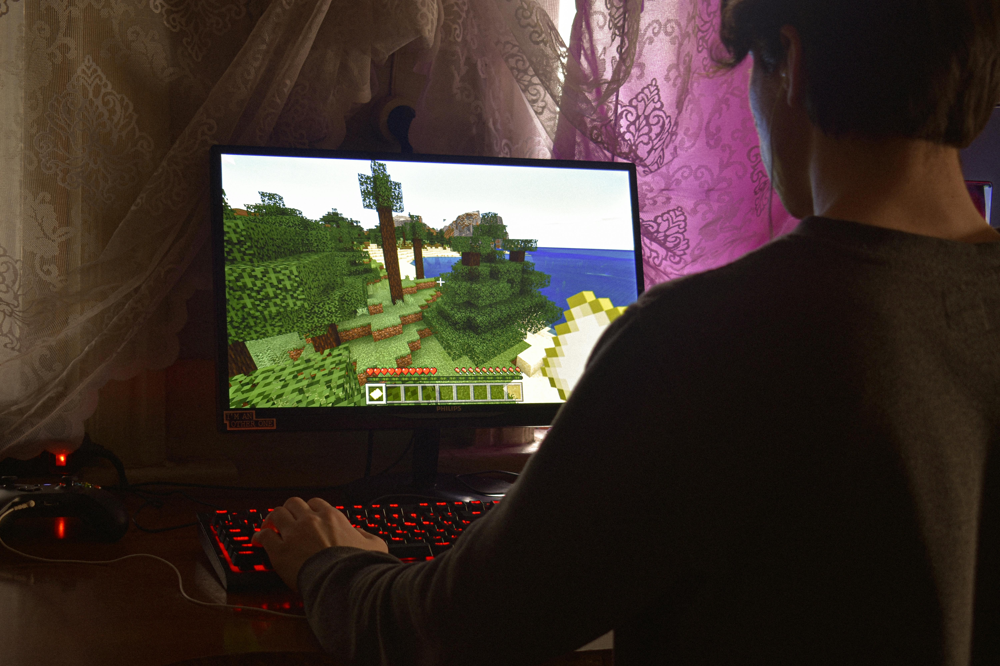

Práctica 1
En esta página les hablaré sobre mis pasatiempos aplicando lo aprendido en la materia Fundamentos de Desarrollo Web, estilos, cuerpos de la página, como hacer commits, etc
Mis pasatiempos
Coleccionar carros a escala

Tengo este pasatiempo desde aproximadamente 3 años, llegando a una colección de cerca de 200 carros a escala, principalmente marcas como Hot Wheels, Johnny Lightning, entre algunas otras, la mayoría comprados en mercados de juguetes como la "Y Griega" o en tiendas comerciales, aparte de mis carros, he conseguido muchas buenas experiencias, he obtenido experiencia en compra y ventas y he conocido a personas con los mismos gustos que yo, mi favorito es un herbie igual al de la imagen pero lo conservo en su blister (empaque).
Jugar Minecraft
Minecraft se convirtió rápidamente en mi videojuego favorito, lo jugaba en su version Pocket Edition en el celular cuando era niño, después al comprar mi laptop lo descargué pirata (lo siento MOJANG), pero en la primera oportunidad que tuve de comprarlo en su versión de JAVA lo hice y ya lo tengo de manera legal lo cual me hace sentir orgulloso, este juego me encanta ya que deja volar tu creatividad siempre existiendo cosas que hacer, construir y optimizar haciéndolo muy divertido y hasta cierto punto educativo.
Escuchar música
El escuchar música se ha convertido en una de las actividades que más hago en mi día a día, al manejar, al hacer tarea (mientras hago esta página), cuando estoy en mi cuarto. Por esta razón siempre me gusta tener a la mano mis audífonos, honestamente me gusta variar mucho en mi gusto musical y estar abierto a escuchar muchos géneros distintos, también mucho depende de mi estado de ánimo, escuchar algo que me motive, algo que me ponga feliz o algo que me haga estar más triste, es algo muy importante por lo que la música siempre me acompaña en todos mis altos y bajos momentos.